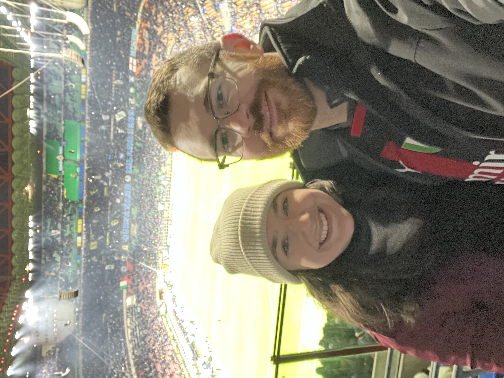
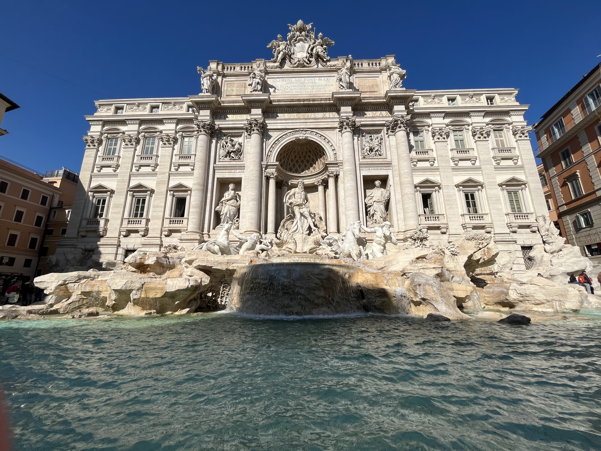

Why I Chose the MSIS Program
In my current role as Associate Director of Admissions Technology at University of Cincinnati, I oversee a team that serves as the primary administrators for the Office of Admissions' CRM and related systems. My responsibilities are a mix of technical knowledge, system strategy, data analytics, and leadership. I chose the MSIS program to further develop my technical and analytical skills to improve in my current role and to prepare for future career growth.
Fall 2026 Class Schedule
- IS 7012: Programming & Modern Frameworks
- IS 7032: Database Systems
- IS 7020: Systems Analysis & Design
- IS 7050: Enterprise Resource Planning 1
Career Objectives
I'm really happy in my current role! My main career objectives are to continue improving in my current position and set myself up to be able to increase the scope and level of responsibility of my work. I especially like working in higher education and hope to remain in the university setting. But we all know life leads us in unexpected directions. Below are some other roles that I would be interested in:
- Database Administrator
- Solutions Architect
- Application Developer
- Web Developer
My Strengths
A few of my top strengths are leadership, problem-solving, creativity, and curiosity. I'm able to lead a team well, providing guidance and vision while empowering team members to be high-acheiving. I enjoy solving problems, especially when they require creative solutions. Curiosity shows up in my desire to learn and grow as well as the way I treat people, especially when we have differing perspectives.
Hobbies & Interests
I have played a lot of sports but spent the most time playing baseball, which I played through college. After college I even played in a Hispanic adult league for 8 years! I’m a lifelong Cincinnati Reds fan and a big AC Milan supporter (Italian soccer). Now I really enjoy playing disc golf and signing up for tournaments when I can.

I’ve been playing video games my whole life and probably will continue until I’m old. I love playing on PC and built my own computer for it. Nintendo also hold a special place in my heart. I enjoy just about any genre of games.
I’ve been consistently working on learning Italian for a few years. My wife and I have travelled to Italy four times already and plan to go back many more times. We also love making fresh pasta and Italian food at home.
